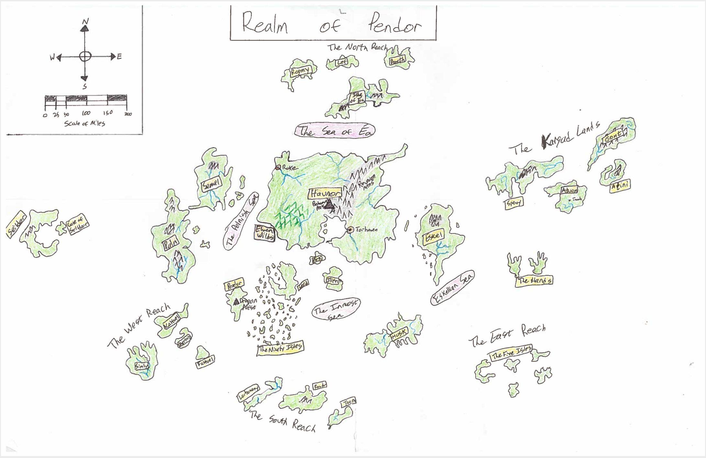

These are some resources I have found incredibly helpful in my Dev journey. I keep coming back to them and hope that you will find them useful as well!
Functions
- .map()
- .reduce()
- .forEach()
- .join()
- .shift()
- .push()
- .pop()
creates a new array populated with the results of calling a provided function on every element in the calling array.
executes a reducer function (that you provide) on each element of the array, resulting in single output value.
executes a provided function once for each array element.
creates and returns a new string by concatenating all of the elements in an array, separated by a specified separator string
removes the first element from an array and returns that removed element. This method changes the length of the array.
adds elements to the end of an array and returns the new length of the array.
removes the last element from an array and returns that element. This method changes the length of the array.
Loops
Acessability - aa a11y
Deeper Digging
Dungeons and Dragons
- name: 'Seoul',
- race: Tabaxi
- age: 34,
- occupation: 'Sea Captain',
- ship: 'Sea Captain',
- class: Ranger,
- Fog Cloud
- Hail of Thorns
- Protect from Evil and Good
- Locate Object
- Misty Step
- Silence
Spells
L1
L2
8 Highsun 1493
The Unblinking Eye
1st Level
Great evil lies before and beyond The Veil, and Erekose Wavewalker may be the only one living who can cross the magical barrier to stop their apocalyptic reunion. Erekose approaches his trusted friend, Ryu, to form a crew to take him beyond The Veil and stop the calamity. Ryu has spent months searching for the shadowy figures in the vision sent by his goddess, Elhonna. At long last, Ryu, Seoul, Ki-smo, Shaedra, and Jess gather in the Karnosean port city of Nyaru to begin their journey across The Veil.
However, the party's movements have not gone unnoticed, and members of the Unblinking Eye follow our heroes as they set out to rendezvous with Erekose at the docks. By the skilled blade of Shaedra, silver tongue of Jess, and a feeble attempt at intimidation from Ki-smo the party is able to escape and interrogate a poor young lackey (Trevor) of the Unblinking Eye. Seoul "takes care of" the boy, and the group scouts out the Eye's impressive flagship: the Whitecrest.
Deciding they have met their match, our heroes retreat to the docks and find Erekose standing by with his boat, the Lookfar, magically folded up in a convenient, ornate wooden box. Two uneventful days pass as Erekose speeds their voyage by calling upon Kord, the god of Storms, to fill their sails. Erekose tells his crew about the evil creature Ralakor and his plan to use the Heart of the Swarm to wrest control of Shinar's mind flayers (illithid) from their Elder Brains. With such an army, Ralakor would enslave all sentient beings of Shinar and launch an invasion of the stars.
We rejoin our heroes on the morning of 10 Highsun 1493 as the sun rises over the vast sea, illuminating the impenetrable, massive wall of mist and light: The Veil…
12 Highsun 1493
How Many are We?
2nd Level
Great evil lies before and beyond The Veil, and Erekose Wavewalker may be the only one living who can cross the magical barrier to stop their apocalyptic reunion. Erekose approaches his trusted friend, Ryu, to form a crew to take him beyond The Veil and stop the calamity. Ryu has spent months searching for the shadowy figures in the vision sent by his goddess, Elhonna. At long last, Ryu, Seoul, Ki-smo, Shaedra, and Jess gather in the Karnosean port city of Nyaru to begin their journey across The Veil.
However, the party's movements have not gone unnoticed, and members of the Unblinking Eye follow our heroes as they set out to rendezvous with Erekose at the docks. By the skilled blade of Shaedra, silver tongue of Jess, and a feeble attempt at intimidation from Ki-smo the party is able to escape and interrogate a poor young lackey (Trevor) of the Unblinking Eye. Seoul "takes care of" the boy, and the group scouts out the Eye's impressive flagship: the Whitecrest.
Deciding they have met their match, our heroes retreat to the docks and find Erekose standing by with his boat, the Lookfar, magically folded up in a convenient, ornate wooden box. Two uneventful days pass as Erekose speeds their voyage by calling upon Kord, the god of Storms, to fill their sails. Erekose tells his crew about the evil creature Ralakor and his plan to use the Heart of the Swarm to wrest control of Shinar's mind flayers (illithid) from their Elder Brains. With such an army, Ralakor would enslave all sentient beings of Shinar and launch an invasion of the stars.
We rejoin our heroes on the morning of 12 Highsun 1493 in a small port town in The Southern Reach. The party has used the coin from Erekose to procure and provision a ship for their travels ahead, and they walk now to the docks to embark on their maiden voyage…
12 Highsun 1493
How Many are We?
3rd Level
SHIP:
The Ragtag Mistress
CREW:
- Ol'Mac
- 'boiō 1'
- 'boiō 2'
Our heroes sets sail aboard The Ragtag Mistress with "Captain Dr." Seoul pointing the way and their new first mate, Ol' Mac, at the helm. After five days at sea the crew arrive in the port town of Haven on the isle of Hosk. They immediately proceed to the dock district to grab beers at the Busty Maid and Ryu draws the ire of a grumpy goliath with an aversion to dragonborn.
Thanks to the watchful eye of Ki-Smo and the magical charms of Jess, our heroes dissolve the tensions long enough for the goliath to lead them to Beggar's Alley. Shaedra engages an old man in a lively discussion regarding the number of persons present, and gains access to a secret stronghold of the Waykeepers. Once inside, he learns that the ancient weapon they seek, Nerazim's Blade, was last seen in the possession of a red tiefling named Damaia (aka "Glory"). Damaia has turned herself over to the House of a Thousand Delights, run by a powerful djinn named Ezrekai.
The crew returns to the Busty Maid to establish their plan, but have the peace interrupted by the angry goliath who by now has realized that magical wool had been pulled over his eyes. When the dust settles, our heroes are left with a dead goliath, a terrified blue tiefling woman, and a coin marking patronage at the House of a Thousand Delights.
We rejoin our heroes on the evening of 17 Highsun 1493 with sunset approaching, and with it their deadline to return the tiefling to the House of a Thousand Delights…
17 Highsun 1493
Un-Ending Joy
3rd Level
In the port city of Haven on the isle of Hosk the crew of the Ragtag Mistress follow in the footsteps of adventurers long-gone by splitting the party. Jess and Ki-Smo stay behind with their confused new charge, a blue tiefling woman named Joy, while Seoul, Ryu, and Shaedra head off to the mysterious House of a Thousand Delights.
At the entrance to the House of a Thousand Delights our heroes are met by an air genasi named Tempest. He denies them entry, as there are no records of their membership, but offers an alternate deal for a transference of membership. The crew pays off the debt of the goliath they killed, Grom, and agrees to replace the lost client by securing a new one. Our heroes select a contract to procure the eye of a Spectator for Master Branheim Woolford, a master craftsman who requires this special component.
The team reunites for a night's rest, only to have their evening's slumber interrupted by an unwelcome guest. A cloaked, hooded, black dragonborn with a gleaming red eye infiltrates their room under the cover of magical darkness and chaos ensues. When the dust settles Joy is found bleeding out in her bed while the dragonborn flees through the streets of Haven and disappears into the religious district. The combined healing powers of Jess, Ki-Smo, and Ryu stabilizes Joy long enough for our heroes to rush her to the care of healers at the temple of Ehlonna.
With the dragonborn's trail gone cold and Joy's fate in the hands of the healers, the crew provisions for their mission and set out to track down the lair of the Spectator. We rejoin our heroes on the afternoon of 18 Highsun 1493 facing a cave opening blocked by a familiar barrier of pure red light...
18 Highsun 1493
Lair of the Spectator (Part 1)
3rd Level
In the wilderness beyond city of Haven, our heroes come to the lair of a Spectator and find the entryway barred by a familiar wall of pure red light. Unfortunately for our heroes, the statue guardians inside are also members of AA: Aggressive and Animated. A fast battle ensues during which Ki-smo and Ryu do some rock lifting exercises and Jess shows off the power of Sacred Flame. When the rock dust settles our heroes build a stone arch from the rubble to block the wall of light and gain entry to the Spectator’s lair.
Shaedra anchors rope to help the team repel down to the cavern below, and thanks to a well-placed bedroll the whole team makes it down safely. Our heroes find themselves in a vast, cavernous room that once was a temple to a god known as The Traveler. Seoul navigates a labyrinth built in to the floor tiles and gains a boon from The Traveler, only to have it taken away again when he hurls a telescope-looking contraption containing an eyeball at the altar.
Shaedra and Seoul both work at extracting the eyeballs from these contraptions and manage to stab one but extract the other. The ruined eyeball erupts in a flash of light that bounces around the room and causes ripples of color to cascade across a map of Pendor installed in the temple floor. About this time Ryu inspects the altar and finds a sigil of the dark god of undeath, the Whispered One. The back wall of the temple opens with an ominous rumbling of stone and an alien creature floats up from a hidden passageway beyond the wall. It turns the gaze of its many eyes upon the ragtag crew of interlopers and exclaims, “Why have you interfered? Identify yourselves, intruders!”
We rejoin our heroes early in the evening of 18 Highsun 1493 face-to-face with an aberration of the Far Realm: a Spectator…
18 Highsun 1493
Lair of the Spectator (Part 2)
3rd Level
In the wilderness beyond city of Haven, our heroes have delved into the lair of a Spectator who calls itself "Watcher 349". After a brief conversation with the many-eyed monstrosity, the party decides they have what they need and return to Haven with a Spectator eye.
On their arrival, the party successfully bargains with Master Woolford to pose as a prospective patron in the House of a Thousand Delights for 1 week. During this time he has agreed to provide our heroes with inside information in exchange for splitting any costs incurred to maintain the ruse. The party rests and decides to venture into town to seek some entertainment as the House is closed for their day of rest.
In Haven the adventurers come a cross a grand dueling tournament that has drawn spectators and competitors from all walks of life: peasants, merchants, nobles, clergy, mercenaries, and sponsored athletes. Among the crowd they spot a familiar air genasi, Tempest, accompanied by two large brutes and a female red tiefling: Damaia.
Ki-smo concocts a plan to enter the duel as a contestant in the hopes of getting face time with Damaia and convince her to leave with them. However, the ragtag crew decides swifter action is necessary. Shaedra poisons a mug of ale with pale tincture to be delivered to Tempest, but the merchant chickens out and warns Tempest as he hands him the mug. Meanwhile, Shaedra and Seoul maneuver into position to sneak up upon their foes. With a few swift kicks, a punch, some daggers, a fog cloud spell, and a deafening thunderclap from Ryu the dueling arena erupts into a massive brawl.
We rejoin our heroes early in the afternoon of 19 Highsun 1493 in the midst of this chaos as Jess dives into the magical cloud of fog to convince Damaia to make an escape…
19 Highsun 1493
Escaping the Brawl
4th Level
Brawl! The grand dueling tournament of Haven is thrown into chaos by our ragtag crew of adventurers. At the epicenter of the action Seoul summons a cloud of magical fog to provide cover for Jess to extract the one person with information on the whereabout of Nerazim's Blade: Damaia.
Jess works her magical charms on the red tiefling woman and convinces her to leave with our heroes. Tempest and his guards are disoriented by the fog cloud and a well-placed silent image spell from Shaedra. Our heroes make their escape mostly unnoticed while the House of a Thousand Delights crew start a food fight and step in a bear trap in their confusion.
The crew races through the maze of tents and carts of the dueling arena, evading Tempest's pursuit and dodging guard patrols. However, at the very edge of the arena they find their escape route blocked by a large crowd as the brawl spills into the streets. Jess and Ki-Smo find a large warhorse tied up outside a knight's tent, and use it to drive a wedge through the brawling masses. Ki-Smo charges the horse into the melee, sending bodies flying and trampling a few unfortunate souls beneath the hooves of the powerful steed. The rest of the crew escapes through the space left behind and retreat to the safe confines of the Ragtag Mistress.
We rejoin our heroes late in the evening of 19 Highsun 1493 in the bay of Haven with a confused Damaia questioning the intentions of her new "friends"…
20 Highsun 1493
Nerazim's Blade Revealed
4th Level
Aboard The Ragtag Mistress our heroes convince their new friend, Damaia, to accompany them for a visit to the Waykeepers. During the night the ship is visited by an air elemental scouting out ships at port. The elemental does not attack the ship, but clearly someone is keeping an eye on the activity in the harbor.
Ryu leads the visit to the Waykeepers and solicits the help of Gate Keeper Elara in identifying Damaia's magical blade. After some inspection, Elara confirms that it is, in fact, Nerazim's Blade. However, Damaia seems to have been placed under a curse that binds the sword to her. Elara suspects foul play on the part of a sea hag known as Auntie Agatha Mudwallow, and provides our heroes with a map to her lair.
The crew stocks up on potions and capsules to breathe underwater at Gilmore's Glorious Goods, and set sail for the lair of Auntie Agatha. After two days at sea The Ragtag Mistress comes across flotsam strewn about from the remnants of a sea elf rafts. As they search the wreckage a black sail appears on the horizon.
We rejoin our heroes late in the afternoon of 22 Highsun 1493 as the other ship comes into view, boasting a hull covered in sun-bleached bones...
22 Highsun 1493
Of Talking Fish and Whale Sharks
4th Level
As the sun sets over the Eskellian Sea, the crew of the The Ragtag Mistress spots a ship boasting a hull covered in sun-bleached bones. Shaedra recognizes the macabre décor, and warns the party that the ship belongs to the pirating orc nation he has encountered before. The party weighs anchor and rows ashore the small island near Auntie Agatha's underwater lair.
Approaching the island, our heroes find the shore covered in the bodies of dead, rotting, mutated fish. Seoul picks one up as a prize, and is surprised by the voice of Auntie Agatha herself speak from its decaying mouth. The party barters with the old sea hag, and agrees to bring her the soul of one orc in return for information on the curse upon Damaia and her sword.
The crew makes way back to the rowboat, but are startled by the rumble of thunder. Off in the distance they spot a ship pursuing the orc ship and recognize it as the Whitecrest, flagship of the Unblinking Eye. Our heroes concoct a daring plan to intercept the ships, and head back for the Mistress to join in on the action.
On the approach, Ki-smo recruits the help of a friendly whale shark to give Shaedra a ride to the Whitecrest. After nearly loosing his footing while riding the shark, Shaedra manages to scale the flagship, kidnap a sailor, and whisk his prize off back to the sea. The rest of the party row to meet him under a hail of canon and gunfire, and extract their prize back to the Ragtag Mistress.
After some interrogation, our heroes learn from the sailor that the Whitecrest is piloted by Captain Thelos who sails under the command of High Monitor Karrick, a high-ranking leader in the Unblinking Eye. This ship apparently found a way to cross the Veil and have been hot on the crew's pursuit since their crossing. Though not an orc, they figure this soul might do the trick to complete their bargain with Auntie Agatha, and they descend to her lair below the waves: a massive whale skeleton buried in the reef.
We rejoin our heroes late in the evening of 22 Highsun 1493 in the lair of Auntie Agatha, who has been awaiting their arrival with great interest…
Map of Pendor
22 Highsun 1493
Auntie Agatha's Lair
4th Level
Our heroes descend below the waves to visit a sea hag, Auntie Agatha, who makes her lair amidst the skeleton of a long-dead ancient beast of the deep. Upon their arrival they present their prize: a captive sailor's soul in exchange for information about the magical blade bound to their friend Damaia. Agatha scoffs at their very-much-alive offering and goads them into murdering the poor sailor. She mocks their needless cruelty before turning her gaze to Damaia's sword.
Agatha pours over the curved, black weapon and reads the ancient runes inscribed along its blade. She reveals that this is Nerazim's Blade, an ancient weapon of the Voidwalkers capable of severing the very tether that binds a soul to the Astral Plane. Damaia has no memory of how she came into possession of such a powerful artifact, but Agatha presents both a mystery and an answer. Agatha herself bound the sword to Damaia at the tiefling woman's request. She also holds a magical pipe that can re-enact the holder's most heroic memory in smoke. Damaia is eager to learn more of her past, and agrees to call upon the pipe's magic.
As Damaia exhales the pipe's smoke, a dramatic battlefield unfolds before our heroes: dragonriders battle airborne foes while a massive, tentacled monster rips apart a large warship struggling for its life at sea. The vision zooms in on Damaia, riding on the back of a young dragon alongside a familiar face to Seoul: his long-lost uncle. As defeat draws nigh Damaia clenches her jaw, hands a necklace to Seoul's uncle with a wink, and backflips off the dragon toward the tentacled behemoth below. Damaia gracefully plunges through the air, Nerazim's Blade outstretched, and as she meets the great beast the vision dissipates in a blinding flash of light.
Our heroes decide to maximize their visit to the sea hag, and ask her to release the blade's bond in exchange for agreeing that the blade's ownership shall pass to her in the event that the entire party dies. They also negotiate for Agatha to arrange a visit with the Oracle in exchange for delivering a pendant as a wedding present to Agatha's niece, Lady Sylvana Crowley in Port Last on the isle of Eskel.
The crew of the Ragtag Mistress part from Agatha's lair ready to set sail, but find themselves betrayed! Unbeknownst to our heroes, the sea hag magically summoned High Monitor Karrick, leader of the Unblinking Eye's contingent that has crossed the Veil pursuing them. The party manages to hide atop a cliff face, overhear Karrick's exchange with Agatha, and learn that Erekose has been taken captive. Chaos erupts as our heroes get the drop on the powerful trio of the Unblinking Eye. Karrick and crew retreat behind rocks and magical defenses and Ryu is dropped unconscious by his wounds from the Unblinking Eye archer. Our heroes rush to their rowboat to escape while Karrick summons a magical teleportation circle. As the crew rows away, Karrick pauses long enough to call down a mighty blast of unholy light and severely wounds most of the party.
We rejoin our heroes in the morning of 23 Highsun 1493 aboard the Ragtag Mistress, with Nerazim's Blade resting lightly in Jess's hand, and Erekose's capture and Agatha's betrayal weighing heavy on their hearts…
passwords
- d&d
- jurassic park